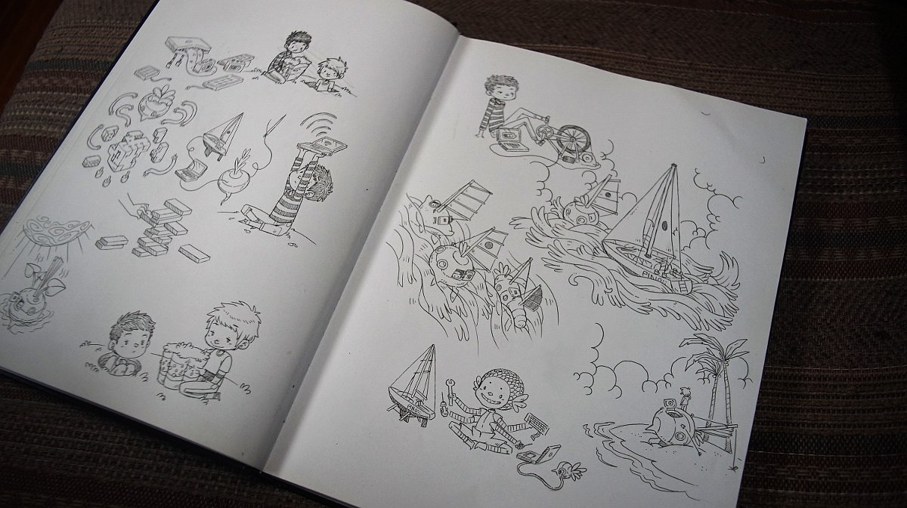

About
About Projects
Projects Books
Books Games
Games Stories
Stories Store
Store Notes
Notes How-to
How-toOn March 20th 2022, devine and I gave a keynote talk named Software Doldrums for Libre Planet 2022. See the video.
The drawings were drawn by hand, in ink, photographed, lightly processed in GIMP and included in Adelie, our slideshow program.
We talked about living on the water, often away from civilization, internet connection and distribution routes, how we could not bring our digital creations to life without the capability to repair devices and fix software ourselves, and how this led us to making our own software.
I drew a series of illustrations for our slide show presentation:


Other images:
- Carving a place for ourselves[21.2 kB]
- Power hungry laptop[15.4 kB]
- Rek and Devine[28.8 kB]
- Looking for internet[18.1 kB]
- Charging laptop by pedaling[20.8 kB]
- Turnip sailboat charged by the sun[18.1 kB]
- Parallel between sailing and computing[21.9 kB]
- Our wiki is the connecting thread[15.7 kB]